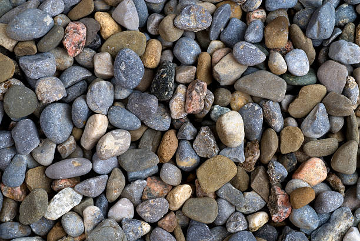

Makakilo Hawaii
info@lindahardware.pro
Makakilo Hawaii
info@lindahardware.pro

Transform your Makakilo Hawaii outdoor space with premium pea gravel. Whether for decorative features or functional ground cover, enjoy long-lasting results and affordable landscaping solutions.
Click Here To Call Us (877) 848-1711When it comes to creating beautiful and durable outdoor spaces, our Pea Gravel services in Makakilo Hawaii are the top choice for homeowners and businesses alike. Known for its versatility and natural aesthetic, pea gravel is the perfect solution for a range of landscaping and construction projects. Whether you're working on a driveway, pathway, garden bed, or drainage system, our high-quality pea gravel offers an eco-friendly and cost-effective alternative to other landscaping materials.
Our pea gravel is sourced from the best quarries to ensure it is clean, consistent, and easy to work with. We provide a wide variety of colors and sizes to match your unique design needs. Pea gravel’s rounded texture allows for excellent drainage, making it a popular choice for areas prone to water runoff or heavy rainfall in Makakilo Hawaii .
Not only is pea gravel an attractive option, but it's also low-maintenance. It’s resistant to weed growth and can be easily replenished to maintain its appearance. Our team of experts in Makakilo Hawaii will help you determine the ideal amount of pea gravel needed for your project and ensure it’s installed properly for long-lasting results.
For the best pea gravel services in Makakilo Hawaii choose us for reliable, professional, and affordable solutions. Contact us today for a free consultation and get started on transforming your outdoor space with high-quality pea gravel!
Residential & commercial Pea Gravel
Quality services at affordable prices
Immediate 24/ 7 emergency services


Pea gravel is an excellent choice for landscaping in Makakilo Hawaii offering both functional and aesthetic benefits that align with the region's unique climate. Miami’s hot, humid environment can challenge traditional landscaping materials, but pea gravel stands out due to its durability and versatility.
One of the main advantages of pea gravel in Makakilo Hawaii is its heat resistance. Miami's scorching summers and intense sunlight can cause some landscaping materials to crack, fade, or deteriorate. Pea gravel, however, remains intact and vibrant under harsh weather conditions, making it a long-lasting option for your outdoor spaces. Its small, smooth stones provide excellent drainage, which is especially important in Makakilo Hawaii where heavy rains and humidity are frequent. This drainage helps prevent waterlogging and erosion, ensuring that your landscaping stays intact and healthy year-round.
Additionally, pea gravel offers a low-maintenance solution. Its natural composition means it doesn’t require frequent upkeep like grass or mulch. Simply adding a fresh layer of pea gravel every few years can keep your landscaping looking new and pristine. It’s also highly customizable, with a variety of colors and textures that can complement any design, from contemporary patios to rustic garden paths.
Whether you're creating a driveway, garden bed, or decorative pathway in Makakilo Hawaii pea gravel’s adaptability to different landscapes and climates makes it a top choice for homeowners seeking both beauty and practicality.
Residential & commercial Pea Gravel
Quality services at affordable prices
Immediate 24/ 7 emergency services
Proper drainage is critical for any commercial property, and pea gravel can provide an effective solution to manage water runoff. Using pea gravel in drainage systems ensures effective water flow while reducing the risk of flooding and erosion on your property.
In Makakilo Hawaii we are the experts in setting up commercial drainage systems that incorporate pea gravel. Our knowledgeable staff can assess the specific needs of your property to determine the optimal layout and materials for the best drainage performance.
Choosing us for your drainage solutions ensures you are working with a team that values quality and reliability. We offer lasting solutions that protect your investment while promoting a healthy environment on your commercial property.

Garden displays and outdoor exhibits offer opportunities for creativity and expression, and pea gravel serves as a beautiful, practical base. This material enhances the visual experience while providing excellent drainage and preventing weed growth, making it perfect for showcasing plants and sculptures.
In Makakilo Hawaii using pea gravel for garden displays allows you to create stunning focal points that attract attention while remaining functional. It integrates well with various plants and landscaping elements, enabling seamless design across your outdoor areas.
We specialize in crafting unique outdoor displays that resonate with your vision. By choosing us, you access craftsmanship and industry expertise to ensure your garden and outdoor displays are functional and visually captivating.

Erosion can threaten the integrity of your commercial property, but pea gravel can be an effective method for mitigating its effects. By using pea gravel to stabilize soil and redirect water flow, businesses can protect their landscapes from erosion while enhancing aesthetics.
, we specialize in providing erosion control solutions that integrate beautifully into commercial landscapes. Our expert team will analyze your property’s needs and offer tailored strategies using our premium pea gravel to combat erosion effectively.
By choosing us, you invest in an eco-friendly, sustainable solution designed to protect your property while enhancing its overall look. Our mission is to provide quality services that safeguard your investment for years to come.
Efficient drainage systems are crucial for property sustainability, and pea gravel plays an important role in their effectiveness. Its structure opens pores for water movement, preventing pooling and encouraging expedited drainage in various settings.
, we design and install pea gravel drainage systems tailored to your land's specific needs, whether they are simple or complex. Integrating the right gravel can mitigate issues related to water management and soil integrity while enhancing the overall landscape.
Choosing us means you partner with experts who understand the essential dynamics of drainage. We are dedicated to creating solutions that foster sustainability, ensuring your property benefits from optimal drainage performance.

Adding ponds and water features to your landscape can create a tranquil and appealing environment. Pea gravel serves as an excellent choice for ponds, providing a natural-looking option that enhances the aesthetic while improving functionality.
Using pea gravel in water features or around ponds can help stabilize soil, promote drainage, and create a clean, inviting atmosphere. our team specializes in designing water features that blend seamlessly with your landscaping while focusing on the benefits of using grape gravel.
When you choose us, you’re partnering with experts dedicated to creating beautiful, functional outdoor environments. We ensure all aspects of your pond or water feature installation reflect your vision while offering long-lasting quality.
Achieving a realistic and functional artificial turf installation requires careful attention to the infill material used. Pea gravel is an innovative infill option that provides weight, stability, and natural drainage, enhancing the performance of artificial turf.
At Pea Gravel, we assist in the installation of artificial turf systems utilizing pea gravel infill designed to enhance the overall performance and longevity of your beautiful greens. Our team specializes in understanding the unique characteristics of your property, ensuring the turf installation is practical for your use case.
Using pea gravel as infill allows for high drainage capabilities, preventing water accumulation on the surface and ensuring a firm footing. This innovative solution keeps your artificial turf looking fresh and usable year-round, minimizing maintenance concerns. Choose us for professional artificial turf installations that balance beauty and functionality through expert pea gravel applications.

Maintaining clean lines and structure in landscaping is essential for enhancing a property's appeal. Pea gravel can be an effective material for driveway edging, providing a neat and elegant boundary that improves the overall appearance of your driveway.
At Pea Gravel, we specialize in creating beautiful driveway edging solutions utilizing the natural beauty of pea gravel to define space without compromising on functionality. Our experienced team understands how to enhance existing driveways with appropriate materials, ensuring that your property stands out.
Pea gravel edging not only looks great, enhancing curb appeal, but also aids in controlling weeds and maintaining soil between your driveway and surrounding landscape. It's low-maintenance and easy to install, making it the perfect choice for both homeowners and commercial property owners. Select us for quality driveway edging solutions using attractive pea gravel .

Using the right aggregates in concrete mixes is crucial for creating durable and resilient surfaces. Pea gravel serves as a popular aggregate choice, providing strength and stability while achieving a desirable finish in various concrete applications.
At Pea Gravel, we offer high-quality pea gravel specifically designed for use in concrete mixes . Our team understands the unique properties of aggregate materials, ensuring you achieve the best results whether pouring new driveways, sidewalks, or slabs.
Using pea gravel as aggregate allows for a smooth finish with notable durability, supporting significant weight and resisting cracking over time. Our experts offer guidance on the appropriate ratios and methods for incorporating pea gravel into your concrete mixes, ensuring efficient use tailored to your specific needs. Engage us for top-quality concrete solutions that leverage the versatility of pea gravel .
Years Experience
Expert Technicians
Satisfied Clients
Compleate Projects
At Linda Hardware, we provide high-quality pea gravel that enhances your landscaping projects, construction needs, and more across Makakilo Hawaii . Our commitment to delivering the best gravel products and outstanding customer service makes us the top choice for residents and businesses alike.
Premium Quality Pea Gravel
We source our pea gravel from the finest suppliers to ensure durability, uniformity, and natural appeal. Whether you're completing a driveway, garden path, or drainage project, our gravel's versatility offers a perfect solution. It is both easy to handle and affordable, making it an excellent choice for various applications in Makakilo Hawaii .
Customer-Centric Approach
At Linda Hardware, your satisfaction is our priority. We understand the importance of timely delivery, reliable service, and ensuring that every order meets your specific needs. Our team is dedicated to providing expert advice and personalized support, making your purchase of pea gravel a smooth and hassle-free experience.
Competitive Pricing and Reliable Service
We offer competitive pricing without compromising quality, making it easy for you to stay within budget. With prompt delivery across Makakilo Hawaii you can rely on us to supply the right amount of pea gravel, right when you need it.
Choose Linda Hardware for your pea gravel needs in Makakilo Hawaii . Our exceptional quality, service, and value set us apart as the leading supplier in the area.
In today's world, ensuring your driveway is both functional and aesthetically pleasing is more important than ever. Pea gravel is an exceptional material for driveways, offering a durable, cost-effective, and visually appealing solution for homeowners in Makakilo Hawaii . Unlike traditional asphalt or concrete, pea gravel is permeable, allowing water to drain naturally, which helps prevent erosion and puddling.
When opting for pea gravel, you'll benefit from a variety of color options, creating a unique curb appeal that distinguishes your home. Additionally, pea gravel is easy to install and maintain, making it a popular choice for DIY enthusiasts. Our expertly sourced pea gravel ensures that you receive the best quality stone that resists degradation and stands the test of time.
But why choose us? We advocate for sustainable practices, ensuring our gravel is sourced responsibly. Our dedication to customer satisfaction guarantees that we provide not only premium materials but also expert guidance throughout your driveway project. Whether you're looking to enhance your home's value or simply want a reliable driveway solution, our team is here to help every step of the way.
Landscape design can significantly impact the overall look and feel of your outdoor space. When it comes to innovative and versatile landscaping solutions, pea gravel is an excellent choice. Whether you're looking to create a zen garden, a playground for your kids, or a serene retreat, pea gravel offers endless possibilities.
With its aesthetic appeal and landscaping benefits, our pea gravel options are perfect for pathways, edging, ground cover, and decorative accents. We pride ourselves on being at the forefront of landscape trends . Our team is dedicated to helping you conceptualize your landscaping vision with quality materials and expert advice. Free consultations are available, allowing you to explore various styles that utilize our pea gravel.
By choosing us, you gain access to professional landscape designers who understand the unique climate and environmental conditions of Makakilo Hawaii . We can help transform your outdoor area into a beautiful, functional space that you'll love for years to come.
Creating charming walkways and pathways is essential for enhancing the accessibility and visual appeal of your property. Pea gravel is an ideal material for this purpose, offering not only beauty but durability as well. The soft texture of the gravel yields a pleasant walking experience, while the various colors available allow for countless design outcomes.
Our services include designing and installing pea gravel walkways that complement your existing landscape. Whether you're looking to create a winding garden path, a straight approach to your front door, or simply need pathways connecting different areas of your yard, our team will work with you to create functional and beautiful solutions.
Choosing us means selecting a partner who understands the importance of detail and functionality in your outdoor space. We pride ourselves on using the highest quality pea gravel and providing unparalleled customer service from initial consultation through project completion.
Garden beds are focal points for many homes, and pea gravel can enhance their beauty while providing practical benefits. Utilizing pea gravel in your garden beds can help to conserve moisture, deter weeds, and provide a neat, finished appearance. It’s an incredibly versatile material that can be used in various ways, from decorative ground cover to practical soil coverage.
At Pea Gravel, we understand the dynamics of garden design . Our team can help you decide how best to incorporate pea gravel into your garden beds. Whether it's creating a low-maintenance rock garden or a refined border to your flower beds, our various options can suit any homeowner’s vision.
Pea gravel’s natural look integrates perfectly with plants, allowing the beauty of your flowers and shrubs to stand out. Additionally, it promotes better drainage, ensuring that your plants receive adequate water without drowning. Let our experienced professionals help you cultivate the garden of your dreams using the best pea gravel solutions available .
Creating an inviting patio area can significantly enhance your outdoor living space. Pea gravel is an excellent choice for patios due to its versatility, ease of installation, and elegant appearance. At Pea Gravel, we offer high-quality pea gravel options that will transform your patio into a beautiful and functional outdoor retreat.
Imagine spending warm evenings on your new pea gravel patio, surrounded by the soothing sounds of nature. The smooth stones provide a comfortable surface underfoot, and their natural variations allow you to create unique designs that reflect your personal style. Our team is skilled in designing patio layouts that maximize space and enhance the overall aesthetics of your outdoor area.
In addition to beauty, pea gravel patios are practical. They provide excellent drainage, allowing rainwater to permeate the surface, which reduces the risk of pooling and provides a more comfortable outdoor experience. Whether you want a small, intimate setting or a larger entertaining area, the versatility of pea gravel makes it an ideal choice.
Choosing Pea Gravel for your pea gravel patio means you are selecting a team dedicated to quality and customer satisfaction. We take pride in transforming your patio dreams into reality, ensuring your outdoor space is both functional and fabulous in Makakilo Hawaii .
Safety and fun are paramount when it comes to playgrounds, and pea gravel is one of the best materials available for playground surfaces. Its soft texture provides excellent shock absorption, reducing the risk of injuries from falls, making it a safe option for children .
In addition to safety, pea gravel is a cost-effective option that allows for good drainage and does not support the growth of weeds, keeping your playground clean and low-maintenance. Our expert team can help you design and install pea gravel playgrounds that meet safety standards while also providing a charming, natural environment for play.
We only offer the best quality pea gravel, sourced from local suppliers, ensuring it is free from debris and harmful materials. Our staff is trained in best practices for playground surface installation, ensuring your project is done right the first time. Trust us to create a safe, enjoyable playground that both kids and parents will love.
When it comes to creating a designated pet area or dog run, functionality and comfort are key. Pea gravel is the perfect solution, offering a soft surface that is gentle on paws while being easy to clean and maintain. At Pea Gravel, we understand the needs of pet owners and specialize in creating dog runs that prioritize both safety and aesthetics.
A pea gravel surface provides excellent drainage, keeping your pet area dry and minimizing mud during rainy weather. Its natural properties also discourage weed growth and allow for easy clean-up of waste, making maintenance a breeze. The rounded stones are comfortable for pets to walk on, providing them with a safe space to exercise and play.
Moreover, pea gravel is a cost-effective solution, ensuring that your dog run can be set up quickly without compromising quality. Our experienced team at Pea Gravel works closely with you to design a pet area that meets your specific needs, from size to layout and aesthetics. We’ll ensure your dog run harmonizes beautifully with your landscape while providing a practical space for your furry friends to explore.
Your pets deserve the best, and with our pea gravel solutions, they’ll have a safe and inviting area in Makakilo Hawaii to call their own.
Transform your flower beds into stunning focal points with the addition of pea gravel. It’s an excellent mulch alternative for flower beds, providing excellent drainage while maintaining moisture in the soil. The beauty of pea gravel comes not only from its appearance but also from its ability to enhance the health and vitality of your plants.
, using pea gravel in flower beds can help prevent weed growth, making the upkeep of your garden much easier. Its unique texture and color options can also complement a wide variety of flowers, highlighting their beauty.
When you choose our services, you’re opting for eco-friendly options tailored to your garden’s needs. Our team is dedicated to helping you design flower beds that are not only beautiful but well-maintained, ensuring your flowers thrive all year long.
Rock gardens are a beautiful way to create an informal landscape that mimics nature and provides a serene escape. Pea gravel perfectly complements other stones and plants in a rock garden, adding a touch of elegance while ensuring good drainage to prevent water pooling around the plants.
Our experience in creating stunning rock gardens means we know how to blend different materials and plants harmoniously to achieve your desired aesthetic. Whether you want a modern approach or a classic rustic look, our team can help you design and install a rock garden featuring pea gravel as a key element.
Furthermore, our commitment to quality materials ensures that your rock garden will look beautiful and stand the test of time. Choose us to elevate your outdoor experience with breathtaking rock garden designs tailored to your taste and lifestyle.
As water conservation becomes increasingly important, xeriscaping provides an excellent way to create beautiful landscapes that reduce water usage. Pea gravel is an ideal material for xeriscaping, facilitating drainage and providing a versatile ground cover that complements drought-resistant plants. homeowners can achieve a stunning landscape design while being responsible stewards of the environment.
Choosing pea gravel for your xeriscape means you'll enjoy low-maintenance beauty year-round. It helps stabilize the soil and prevents weed growth while allowing you to focus on developing a landscape that thrives with minimal irrigation.
Our team is dedicated to assisting you in creating a xeriscape that meets your aesthetic desires and sustainability goals. We provide consultation and implementation services that highlight the beauty of your outdoor space while effectively conserving water.
When it comes to parking lots, durability and proper drainage are of utmost importance. Pea gravel provides an alternative to traditional paving that can reduce costs while still offering excellent performance. we specialize in designing pea gravel parking lots that are not only functional but also blend seamlessly into the landscape.
The permeability of pea gravel makes it an environmentally friendly choice, promoting natural drainage and reducing runoff, which is beneficial for local ecosystems. Additionally, its easy maintenance ensures that the parking lot continues to look great over time.
By choosing us, you access a wealth of expertise in commercial-grade pea gravel installations. We are committed to delivering solutions that enhance your property's functionality and appearance while adhering to local regulations and standards.
Creating an inviting outdoor event space involves blending functionality with aesthetics, and pea gravel is a winning choice for this purpose. Whether you are hosting weddings, corporate events, or casual gatherings, pea gravel offers a spacious and versatile foundation while enhancing the visual appeal of your venue.
, we help clients design outdoor spaces that are welcoming, practical, and visually stunning. Pea gravel not only provides an excellent surface for events but also promotes natural drainage, helping keep your space dry during and after rain.
Our team understands the nuances of event planning, ensuring that your outdoor event space accommodates guests comfortably. We are committed to delivering quality customer service and expert guidance to help you bring your vision to life.
Creating effective and attractive commercial pathways is crucial for any business environment. Pea gravel pathways provide not only a charming aesthetic but also a practical solution for directing traffic through your property. Its brilliance lies in its organic texture and the ease of installation.
At Pea Gravel, we understand the unique needs of businesses in creating pathways . Our team is experienced in installing pea gravel pathways that balance functionality and beauty, ensuring smooth navigation through commercial spaces while maintaining a professional image.
Pea gravel offers effective drainage, reducing water pooling and mud accumulation that can deter customers from visiting. Additionally, its low-maintenance nature ensures you won’t frequently worry about upkeep, thereby allowing your staff to focus on running your business. When seeking expert installers for commercial pathways, we guarantee a seamless and attractive solution using quality pea gravel.
Business courtyards serve as extensions of your indoor space, allowing opportunities for creativity and tranquility. Utilizing pea gravel in your business courtyard design presents a sophisticated yet laid-back ambiance where employees and clients can relax and unwind.
In Makakilo Hawaii our approach to incorporating pea gravel in courtyards includes focusing on aesthetic appeal and functionality. This easily customizable material allows you to create intimate gathering spots and enhance natural beauty while providing excellent drainage.
By choosing our services, you're not just getting top-quality pea gravel—you're gaining a strategic partner dedicated to transforming your business’s outdoor spaces into welcoming environments that align with your brand and improve employee satisfaction.
A retail storefront is often the first impression of your business, and enhancing its curb appeal is critical for attracting customers. Pea gravel offers a unique and stylish solution for landscaping, creating visually appealing displays that draw attention to your products and services.
In Makakilo Hawaii using pea gravel in your storefront landscaping allows for creative designs, integrating greenery with decorative stones. Not only does it improve aesthetics, but it also aids in drainage, keeping your landscape fresh and attractive throughout the seasons.
With our team by your side, you'll receive expert guidance in selecting the right type of pea gravel to complement your storefront while ensuring practical, sustainable choices. Our commitment to customer service translates into beautiful results, helping you build a positive brand image.
Landscaping is an essential component of the hospitality experience, contributing to ambience, guest comfort, and overall aesthetic. Pea gravel offers a unique charm that can enhance hotel and resort landscaping, creating beautiful paths, patios, and garden spaces that provide guests with memorable experiences.
At Pea Gravel, we specialize in providing landscapes that reflect luxury and relaxation for hotels and resorts in Makakilo Hawaii . Our team understands the importance of a cohesive design that complements the existing architecture while providing functional spaces for guests to relax and enjoy.
Using pea gravel allows for stunning visual contrasts and textures, promoting a natural environment that enhances the guest experience. Moreover, its low-maintenance nature ensures that your landscapes remain beautiful without demanding extensive upkeep from your staff. With your guests in mind, let us help you create landscapes that reflect excellence and appeal through expertly designed pea gravel solutions.
Creating inviting and safe public spaces is essential for community development, and pea gravel is an outstanding material choice for parks and playgrounds. Offering excellent drainage and a soft surface for play areas, pea gravel is suitable for various outdoor settings in Makakilo Hawaii .
The versatility of pea gravel allows it to define play zones, walking paths, and other park features while adding visual appeal. It's also known for its eco-friendliness, contributing to sustainable designs that support local ecosystems.
By choosing our services, you're engaging with a team that prioritizes community well-being. We have extensive experience in public space design and execution, ensuring that we meet both safety and aesthetic standards while delivering value to your community.
Pea gravel is an excellent material choice for enhancing the aesthetics and functionality of your Makakilo Hawaii property. Known for its smooth, rounded texture and versatile applications, pea gravel offers a range of benefits that make it ideal for landscaping and construction projects.
One of the key advantages of using pea gravel is its low maintenance requirements. Unlike traditional gravel or other landscaping materials, pea gravel doesn’t need regular raking or re-grading. This makes it an ideal choice for homeowners in Makakilo Hawaii who prefer a low-maintenance yard that still looks great year-round.
Pea gravel also offers excellent drainage properties, making it perfect for areas with heavy rainfall or soil that tends to retain water. It helps to prevent water buildup, which can lead to erosion or mold growth. Whether used in driveways, pathways, or garden beds, pea gravel allows rainwater to flow freely, reducing the risk of water damage.
Additionally, pea gravel is cost-effective and durable. Its natural, neutral color complements various landscaping themes, making it a popular choice for patios, walkways, and decorative features. Over time, pea gravel holds up well against wear and tear, ensuring that your investment lasts for many years.
Incorporating pea gravel into your Makakilo Hawaii property is an easy way to boost curb appeal, increase functionality, and add value. Whether you’re revamping your garden or creating a new outdoor space, pea gravel is a versatile solution that offers lasting benefits.
Makakilo is located at 21°21′10″N 158°5′27″W (21.352850, -158.090732) on the southern end of the slopes of the Waiʻanae mountain range above the city of Kapolei. The Interstate H-1 freeway divides more recently developed Kapolei from Makakilo, and traveling eastward on H-1 connects to Waipahu. The freeway ends about 1.5 miles (2.4 km) west of Makakilo, merging into Farrington Highway (State Rte. 90) to Kahe Point and then Nānākuli on the Waiʻanae Coast. Exit 1 on H-1 is Kalaeloa Road, the entrance to Barbers Point and Campbell Industrial Park.
To level pea gravel, use a rake to spread the gravel evenly, and then compact it using a mechanical compactor. This ensures a smooth and even surface for your project .
Pea gravel typically ranges from 3/8 to 3/4 inch in diameter. It is smaller, rounder, and smoother than other types of gravel, making it ideal for decorative landscaping .
Yes, pea gravel is pet-friendly and a great choice for creating safe and comfortable outdoor spaces for pets as it is soft and non-toxic.
Regularly rake the gravel to keep it level, and replace any gravel that gets displaced. Additionally, washing pea gravel annually helps to maintain its appearance.
Pea gravel creates a smooth, comfortable surface for walking, provides excellent drainage, and adds a natural aesthetic to pathways in Makakilo Hawaii making it ideal for high-traffic areas.
Pea gravel is suitable for driveways with moderate traffic. However, for heavy traffic areas, consider adding a stabilizer or combining pea gravel with other types of gravel for better durability in Makakilo Hawaii .
The amount of pea gravel you need depends on the area you're covering. Linda Hardware provides a gravel calculator to help estimate how much you'll need based on your garden's dimensions.
Yes, pea gravel can withstand freezing temperatures. However, it's important to ensure proper compaction and drainage to prevent shifting and freezing problems .
Yes, pea gravel is a sustainable option as it is natural and durable. It doesn’t require frequent replacement, reducing waste, and it provides good drainage to prevent erosion.
To prevent erosion, use edging to contain the gravel and ensure a solid base. Additionally, ensure the area has proper slope and drainage to avoid displacement.
You can order pea gravel from Linda Hardware online through our website, or by calling our customer service team for assistance with ordering and delivery to your Makakilo Hawaii location.
Yes, Linda Hardware offers delivery services for pea gravel directly to your location . Contact us to schedule a delivery at your convenience.
Pea gravel is smaller, smoother, and more visually appealing than other gravel types, making it the best choice for areas where aesthetics and comfort matter, such as pathways or decorative features .
Yes, pea gravel helps with erosion control by promoting water drainage and preventing soil erosion on slopes and hills in Makakilo Hawaii .
Linda Hardware offers high-quality pea gravel at competitive prices, with reliable delivery and expert advice to help you choose the right material for your project in Makakilo Hawaii .
To prevent weeds, install a weed barrier fabric beneath the gravel and maintain a layer of pea gravel at least 2-3 inches thick for optimal results.
Yes, pea gravel is an excellent choice for driveways in Makakilo Hawaii because it's easy to maintain, provides a natural look, and allows for proper drainage, preventing puddles.
Yes, pea gravel is a great, soft surface for playgrounds, providing a cushioned landing for children. Just ensure the depth is sufficient to provide safety .
Absolutely! Pea gravel is perfect for creating a beautiful, low-maintenance patio in Makakilo Hawaii offering a natural, rustic look while allowing water to drain easily.
To clean pea gravel, simply use a garden hose to wash off dirt and debris. For deeper cleaning, you can occasionally replace the gravel or wash it with a pressure washer.
Pea gravel does not attract pests and is a great choice for pest-free landscaping . It also allows water to drain properly, reducing standing water that could attract mosquitoes.
Yes, pea gravel is suitable for slopes especially when used with proper edging to prevent displacement. Its drainage qualities make it a great choice for sloped areas.
The cost of pea gravel varies depending on the quantity and delivery distance. Contact Linda Hardware for a customized quote based on your needs in Makakilo Hawaii .
Pea gravel is available in a variety of colors, from natural tones like brown and beige to more vibrant hues. Linda Hardware offers several color options for your landscaping needs .
Pea gravel is a small, rounded, smooth stone commonly used in landscaping for paths, driveways, and garden beds. It's versatile, aesthetically pleasing, and drains well, making it ideal for various outdoor projects.
Yes, pea gravel is an excellent choice for drainage systems due to its ability to allow water to pass through easily, making it ideal for landscaping and foundation drainage .
Pea gravel is an ideal material for water features such as ponds, fountains, or dry creek beds, as it helps with drainage and creates a natural aesthetic in Makakilo Hawaii .
To install pea gravel, start by leveling the ground, then lay down a weed barrier before spreading the gravel evenly. Linda Hardware can offer guidance or connect you with local professionals for installation.
Pea gravel is highly durable and can last for many years with minimal maintenance, making it an excellent long-term investment for landscaping projects .
Yes, pea gravel can be mixed with other materials like sand or crushed stone to achieve the desired texture and appearance for your project in Makakilo Hawaii .
"Linda Hardware is my go-to for landscaping supplies in Makakilo Hawaii . Their pea gravel is always of the highest quality, and their service is exceptional. The delivery was fast, and the gravel worked perfectly for my garden project. Highly recommend them!"
Profession
"I recently ordered pea gravel from Linda Hardware for my garden paths in Makakilo Hawaii . The quality was excellent, and the price was fair. The team at Linda Hardware made the whole process easy, from ordering to delivery. Highly recommend their services!"
Profession
"The pea gravel I ordered from Linda Hardware was just what I needed. The quality was excellent, and the service was fast and friendly. The delivery was right on schedule, and the team was a pleasure to work with. I highly recommend them in Makakilo Hawaii ."
Profession
Makakilo HI Pea Gravel Pros
(877) 848-1711
info@lindahardware.pro
09.00 AM - 09.00 PM
09.00 AM - 12.00 PM